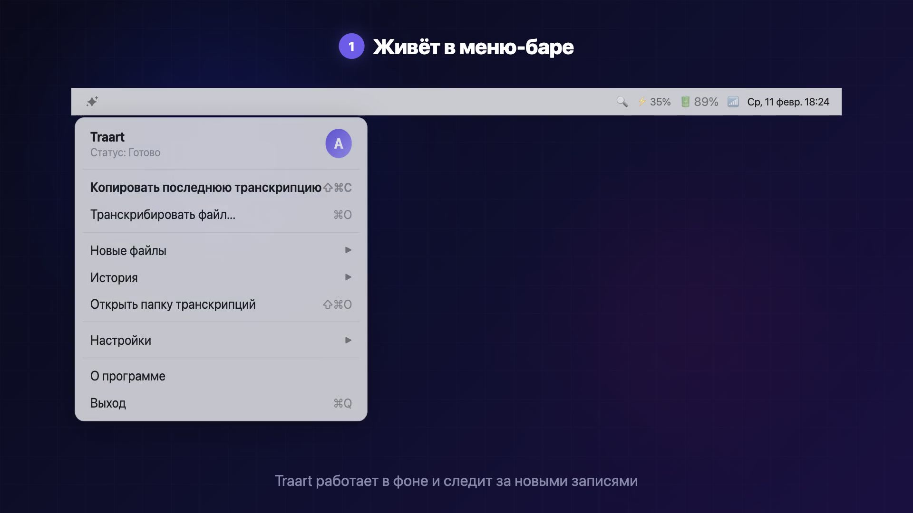

Бесплатный транскрибатор для macOS с оффлайн расшифровкой аудио в текст. Модель GigaAM v3 дает WER 8.3% на русском (Whisper — ~16%). Диаризация спикеров, без подписок и лимитов.
Traart — оффлайн транскрибация на вашем Mac. Ни один байт аудио не покидает компьютер. Качество подтверждено INTERSPEECH 2025.
Посмотрите, как работает транскрибация за 29 секунд

Один и тот же аудиофрагмент — две модели. Разница очевидна.
[53:05] Есть ещё лимитизация. Она требует использования словарей, даже иногда и нерастевых моделей.
[53:54] Например, есть кавкавео, работает так. Если ты ищешь в кавкавео любое слово universal...
4 ошибки: «лемматизация» → «лимитизация», «нейросетевых» → «нерастевых», «Coveo» → «кавкавео» ×2
[53:05] Есть ещё лемматизация. Она требует использования словарей, даже иногда и нейросетевых моделей.
[53:54] Например, есть Coveo, работает так. Если ты ищешь в Coveo любое слово universal...
0 ошибок — все термины распознаны корректно
Источник: «Организованное программирование» #74 — подкаст Кирилла Мокевнина, 97 мин. русской речи
Профессиональная транскрибация без компромиссов
Лучшая модель для русской речи от Сбера. State-of-the-art результаты на всех бенчмарках. Понимает акценты, жаргон и профессиональную лексику.
Вся обработка происходит локально на вашем Mac. Ни один байт аудио не отправляется в облако. Никаких аккаунтов и регистрации.
Автоматическое определение и разделение спикеров через pyannote. Каждая реплика подписана: кто и когда говорил.
Укажите папку — Traart будет автоматически обнаруживать новые аудиофайлы и транскрибировать их без вашего участия.
Поддержка MP3, OGG, WAV, M4A, FLAC, MP4, MKV, WebM, MOV. Вывод в Markdown, TXT или JSON с таймкодами и спикерами.
Оптимизирован для чипов M1/M2/M3/M4 с использованием MPS-ускорения. Максимальная производительность на современных Mac.
точнее Whisper
WER 8.3% vs ~16%
навсегда
без подписок и лимитов
локально
ни байта в облако
форматов
аудио и видео
Начните транскрибировать за минуту
Скачайте .dmg файл, перетащите Traart в папку Applications. При первом запуске модели загрузятся автоматически.
Укажите папку для мониторинга через иконку в menu bar. Traart будет автоматически обнаруживать новые аудио- и видеофайлы.
Готовая транскрипция с таймкодами и спикерами появится рядом с исходным файлом в формате Markdown, TXT или JSON.
Traart vs популярные решения для транскрибации
| Traart | MacWhisper | YandexSpeechKit | Google STT | TurboScribe | |
|---|---|---|---|---|---|
| WER (русский) | 8.3% | ~16% | ~8-12% | ~16.7% | ~16% |
| Цена | $0 | EUR 29-59 | $0.32/час | $0.96/час | $10-20/мес |
| Приватность | 100% локально | Локально | Облако (РФ) | Облако (US) | Облако |
| Диаризация | Бесплатно | EUR 59 (Pro+) | Доп. продукт | ||
| Авто-мониторинг | |||||
| Интерфейс | Menu bar | macOS app | API | API | Web |
Решение для профессионалов и студентов
Транскрибируйте записи Zoom-звонков, Loom-видео и скринкастов. Используйте транскрипты как контекст для Cursor, Claude Code, ChatGPT.
Протоколы стендапов, ретро и customer development интервью. Автоматическая расшифровка всех встреч команды.
Расшифровка CustDev-интервью, фокус-групп и UX-исследований. Конфиденциальность респондентов.
Голосовые заметки в текст для промптов AI-кодинга. Нативное macOS-приложение, без облака.
Расшифровка собеседований с кандидатами. Конфиденциальность данных, диаризация спикеров.
Расшифровка полевых интервью для диссертаций и научных работ. Оффлайн — этичная обработка данных респондентов.
Ещё кейсы:
Скачайте Traart бесплатно и получите SOTA-качество распознавания русской речи прямо на вашем Mac